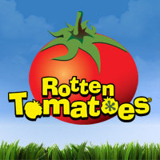

The movie has an overall score of 93% on the tomatometer which is very high compared to some other movies on their website.
Richard Brody from the New Yorker said "The director J. J. Abrams infuses the latest installment of George Lucas's intergalactic franchise with the spirit of Steven Spielberg in this awestruck, warmhearted, and good-humored action spectacle. It's centered on the search for Luke Skywalker by the organized Resistance to the evil dominion of the First Order. That oppressive successor to the Empire wants to extinguish the last of the Jedi, whose help the Resistance fighters need. Abrams recruits a remarkable new posse of actors-including Oscar Isaac, John Boyega, Daisy Ridley, and Adam Driver-to play a batch of new characters, yet for all their flair and presence they have little acting to do (though Driver shines in his moment of theatrical excess). Abrams, who co-wrote the script with Lawrence Kasdan and Michael Arndt, stage-manages some breathlessly clever plotting, but he also plays every gesture and every gag, every sigh and every whoop to the balcony, and he milks decades of nostalgia with the stagy entrances of Carrie Fisher, Harrison Ford, and Mark Hamill. Some of the grandest moments can be seen coming around the corner, the colossal battles and colorful catastrophes feel anticlimactic, and the meticulously designed futuristic weaponry and outfits never rise to symbolic significance. Despite the copious servings of tragic threats and good feelings, the production sinks under the weight of its emotional calculation."
Rolling Stone calls it the "movie event of the year".
Back to the homepage